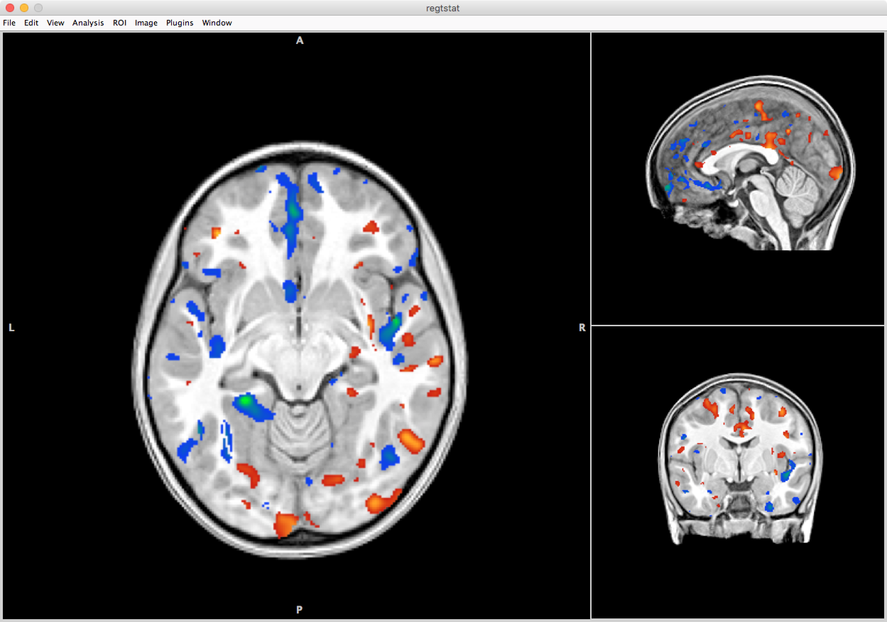

After you complete this section, you should be able to:
Note that everything in “<>” is to be replaced. For example, <fileName> –> iLovePeanuts.txt
R has already been installed on the supercomputer. Log into the supercomputer:
ssh <username>@ssh.fsl.byu.eduLoad the environmental variables so that R will run on the supercomputer:
module load cmake/2.8.10
module load r/3.2.1R relies on packages to run functions. There are currently 7462 packages available. Since any normal user probably only uses <10% of packages, you have to install the packages you will want to use. You need to create directory in your home directory to keep these packages. Once you’ve created this directory, you also need to set your R environment to know where to look for this directory:
mkdir ~/R
echo 'R_LIBS_USER="~/R"' > $HOME/.RenvironThe first package needs to be downloaded directly from source, all the other packages can be installed from within R:
cd ~/R
wget https://github.com/Rexamine/stringi/archive/master.zip
unzip master.zip
R CMD INSTALL stringi-masterLaunch R:
RLet’s install a couple of packages and their dependencies:
options(download.file.method = "wget")
pkgnames <- c("Rcpp", "tools", "methods", "drat")
install.packages(pkgnames, dependencies = TRUE, repos="http://cran.rstudio.com/")The following packages also need to be installed, but without dependencies:
pkgnames <- c("stringr", "evaluate", "knitr", "magrittr")
install.packages(pkgnames, dependencies = FALSE, repos="http://cran.rstudio.com/")Finally, you are ready to install ANTsR:
drat::addRepo("ANTs-R")
install.packages("ANTsR")Now anytime you want to run R, all you have to do is:
module load r/3.2.1
RLet’s load our packages. Remember, you’ve already installed all the packages (install.packages) now all you have to do is load the packages you want to use (library):
library(ANTsR)Set path to directory containing your data:
setwd("/path/to/data/")Import files and smooth - The following code creates a list of files in your working directory (files). Any empty list is created for when the images are smoothed they are added to the empty list (ilist). For each image in the files list, the are imported and smoothed and then added to the ilist list.
files<-list.files()
ilist<-list()
for ( i in 1:length(files) )
{
img<-antsImageRead(files[i])
img<-smoothImage(img,1.5)
ilist[i]<-img
}Convert to matrices - A simple mask is created to know what is and is not data to analyze. You don’t want to analyze nonbrain data. The values are extracted from each voxel to form a 3D matrix.
mask<-getMask(antsImageRead(files[1]))
mat<-imageListToMatrix(ilist, mask)Demographic data can be anything from group ID, age, and gender. Data can also include neuropsych outcomes etc. To make life easy, your demographics file sound have the same study IDs as your MRI files and also be in alphanumeric order.
mydata<-read.table("/path/to/directory/demographics.csv", header=TRUE,sep=",")Subset data to demographics and desired variable column:
vardata<-mydata[c(1:2)]
var1<-vardata[,2]Get rid of any missing data. R does NOT like missing data and will often not run if there’s missing data.
vardata<-na.omit(vardata)Take the subject ID information from the files. Namely your files should be labeled as subject ID (again to make life easier). Since the names in the files list contain not only the subject ID but also the file type (.nii.gz), we want just the subject ID which is 10 characters long. We can then merge the study id list with the demographics vardata and make sure we just have demographics data for the participants with images.
studyid=substr(files,1,11)
studyid=data.frame(studyid)
vardata=merge(vardata,studyid,all.y=TRUE)
varlist<-rownames(vardata)
varlist<-as.numeric(varlist)
varlist<-list(varlist)
for(i in varlist){
varmat<-subset(mat[i,])
}voxels<-ncol(varmat)
regpval<-matrix(nrow=1,ncol=voxels)
regtstat<-matrix(nrow=1,ncol=voxels)
for (i in 1:voxels){
vox<-varmat[,i]
regfit<-lm(vox~var1)
regsum<-summary(regfit)
regpval[,i]<-regsum$coefficients[2,4]
regtstat[,i]<-regsum$coefficients[2,3]
}The data is in the form of a 3D matrix and needs to be converted into a visual NIfTI image.
i.regpval<-makeImage(mask,regpval)
antsImageWrite(i.regpval,file="/path/to/output/directory/regpval.nii.gz")
i.regtstat<-makeImage(mask,regtstat)
antsImageWrite(i.regtstat,file="/path/to/output/directory/regtstat.nii.gz")Data can be download from the supercomputer to a local computer. Using your template image, you can add the regtstat file as an overlay to see results.
